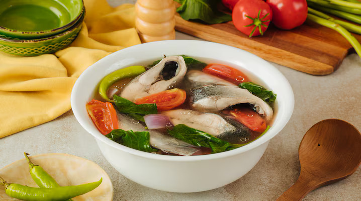

Sinigang na Bangus
Home

Description
Get a warm bowl of comfort on rainy days with this delicious asim kilig sinigang na bangus recipe using pantry staples.
Ingredients
- 4 cups water or rice washing
- 1 pc red onion, quartered lengthways
- 2 pcs tomatoes, quartered
- 1 pcs radish, sliced
- 3 pcs okra, sliced
- Half kilogram bangus, sliced
- 2 pcs sili pansigang
- 1 (22 gram) pack Knorr Sinigang sa Sampalok Mix Original
- 1 bundle kangkong, cut into bite-size pieces
Steps
- With only a few simple steps, and with this one pot dish, this healthy and nutritious Sinigang na Bangus cooks your way into your family’s heart. Start by using the water from where you washed your rice, or just fresh water. Pour this into the pot together with the onions and tomatoes. Bring this slowly to a boil then lower the heat to simmer for a few minutes.
- First add your radish and okra. Let these boil for 2 minutes. Since fish cooks easily, carefully add the fish and long green chilli and simmer gently until cooked through before adding the Sinigang sa Sampaloc Mix Original and kangkong. Make sure that the scales have been removed to eliminate that “malansa” taste from the fish. Stir and simmer. It should be done in a minute.
- All done and it only took 2 steps to cook this dish. Satisfy everyone’s craving by serving this hot and soothing Sinigang na Bangus with enough rice and surely your family will ask for more.